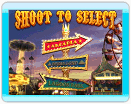
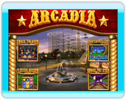
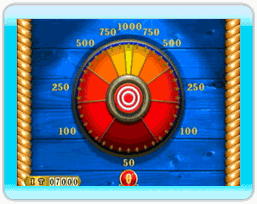

6 |
Introduction |
 |
Carnival King est un jeu vidéo amusant pour les personnes de tous les âges qui apporte à l’écran l’esprit et l’énergie des jeux de carnaval.  Les joueurs se livrent une chaude lutte pour obtenir le meilleur pointage et les meilleurs prix dans trois parcs d’attractions : Arcadia, Dreamland et Lagoon Park. Chaque parc vous offre quatre séries de jeux et une ronde supplémentaire qui mettent à l’épreuve la vitesse et la précision des habilités de tir du joueur. Que vous soyez un débutant ou un tireur d’élite, les jeux présentent toujours un défi; on peut aussi ajuster le niveau de difficulté selon la confiance grandissante du joueur.  Après avoir choisi un parc d’attractions, tirez sur une partie dans n’importe quel ordre et démarrez la Ronde 1. Le joueur a 20 secondes pour tirer le plus de cibles possible avec la plus grande précision et la plus grande rapidité possible. Lorsque vous ratez la cible, le temps continuera à s’écouler et vous n’aurez plus la chance de tirer. Le pointage pour chacune des cibles, de la cible supplémentaire et de l’horloge-prime, est préprogrammé et affiché avant le début de la partie. Tirez sur les horloges-primes qui apparaissent durant la ronde pour obtenir plus de temps.
 Après avoir terminé chacune des quatre parties, si le pointage du joueur est d’au moins 15 000 points, il a droit à une ronde supplémentaire. Chacun des trois parcs d’attractions a une ronde supplémentaire différente : Bonus Wheel, Clown Drown et Dunk Tank. Après avoir terminé les quatre jeux et la ronde supplémentaire, le joueur reçoit son pointage final, un prix et un titre. Vous donnera-t-on un ballon de plage et le titre d’humble débutant, ou encore danserez-vous jusqu’au chapiteau coiffé de la couronne du Carnival King? |
 À la fin de la première ronde, le temps supplémentaire est accordé selon le pointage et ajouté à l’horloge de la deuxième ronde. Puisque la Ronde 2 est plus rapide et commence avec un délai de seulement 15 secondes, ce temps supplémentaire est crucial pour atteindre toutes les cibles et les cibles supplémentaires qui augmenteront votre pointage.
À la fin de la première ronde, le temps supplémentaire est accordé selon le pointage et ajouté à l’horloge de la deuxième ronde. Puisque la Ronde 2 est plus rapide et commence avec un délai de seulement 15 secondes, ce temps supplémentaire est crucial pour atteindre toutes les cibles et les cibles supplémentaires qui augmenteront votre pointage.
 |
 |
 |